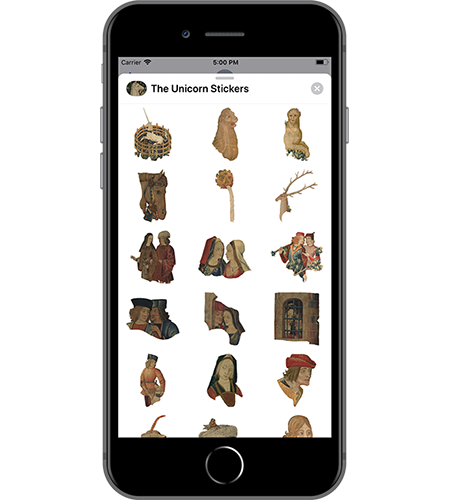

The Unicorn Stickers

Join the de la Rochefoucauld and Rockefeller families in owning the most wonderful tapestries ever made, the Unicorn Tapestries, or at least their sticker cutouts, including a
- Bloody Unicorn
- Smirking Lord
- Pointing Finger
- Snarling Hound
- Hiding Bunny
- Thousand Flowers
and more!
Available for iMessage.